Arte e Frida
Giochiamo con Frida!
8 card con attività divertenti per scoprire la pittrice messicana Frida Kahlo: giochi, disegni da colorare.
Scarica le schede e incomincia a giocare anche tu!
Prima attività: Autoritratto alla Frida.
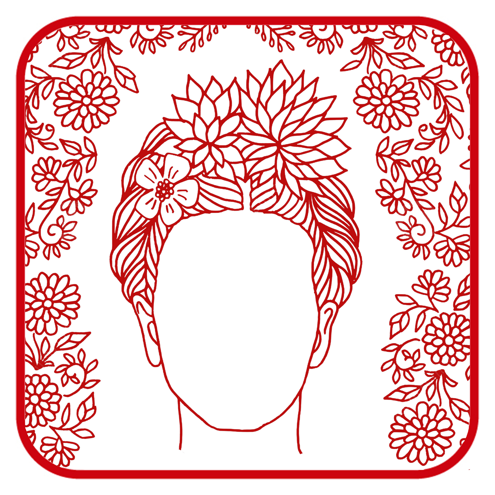
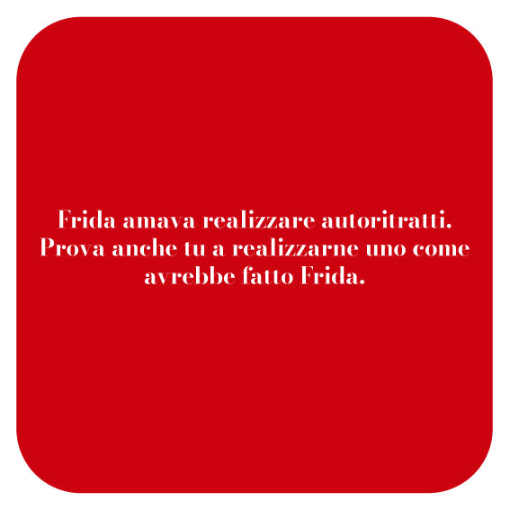
Seconda attività: scopri i dipinti di Frida.
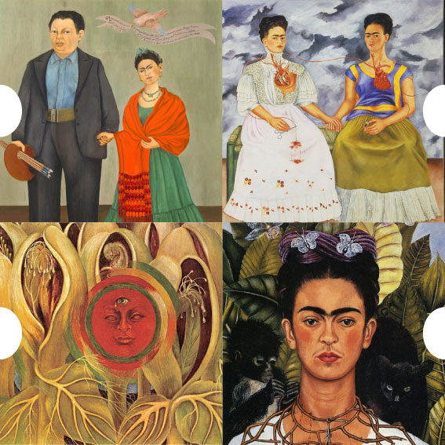
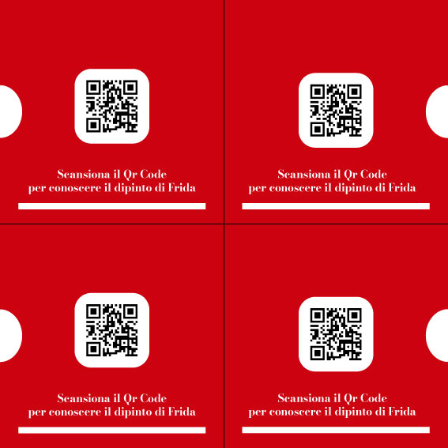
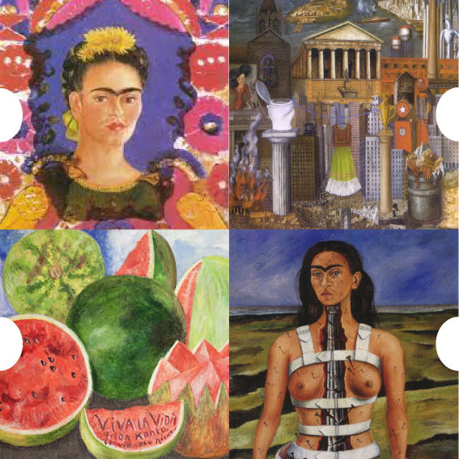
Terza attività: costruisci la casa.
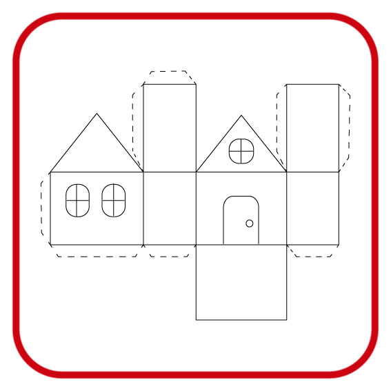
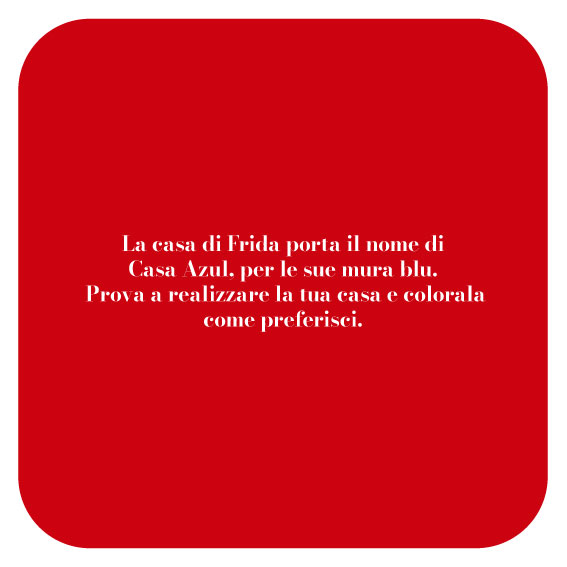
Quarta attività: Frida e l'albero genealogico.
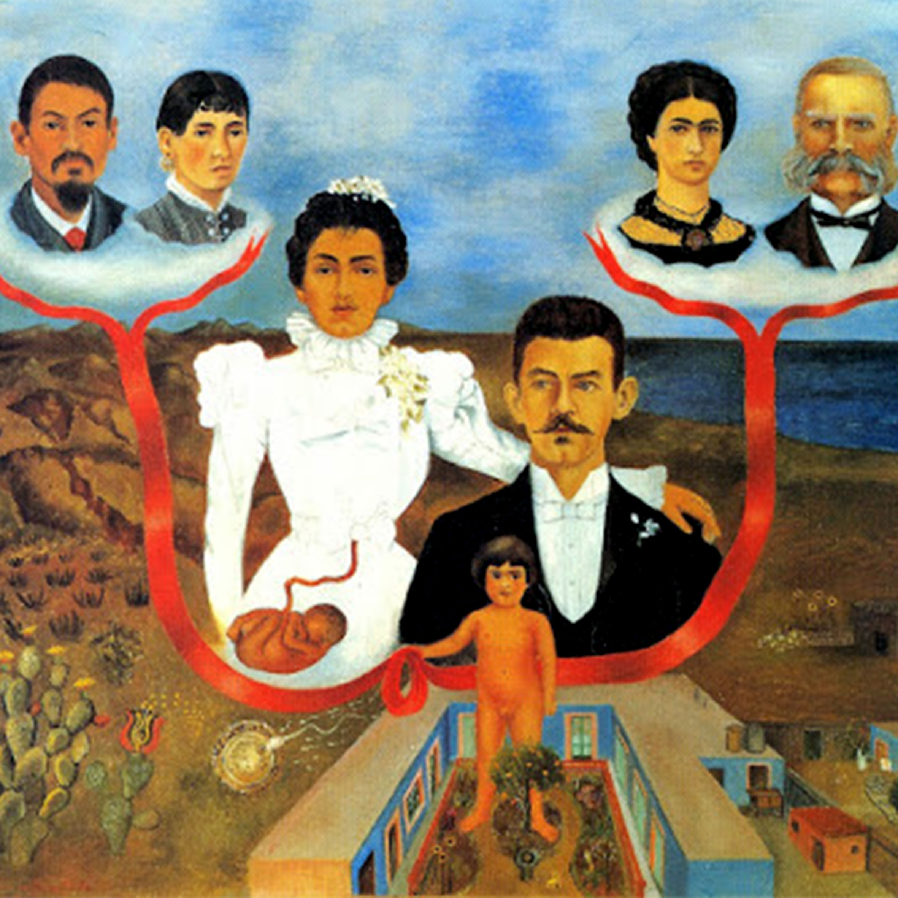
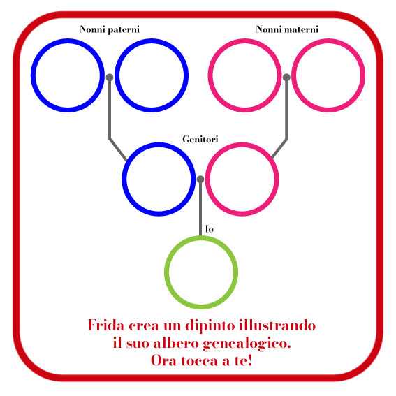
Quinta attività: colora i dipinti di Frida.
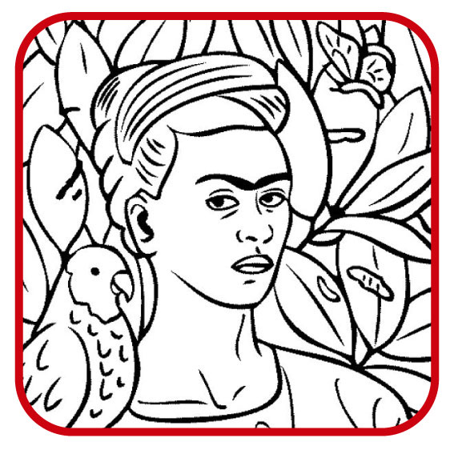
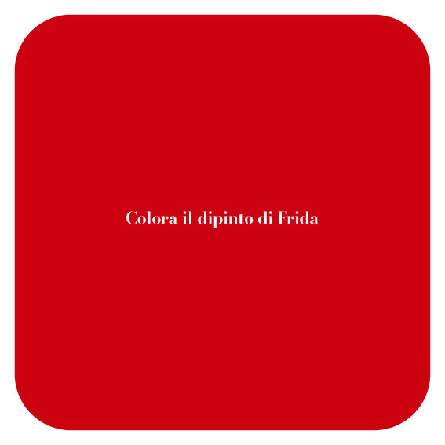
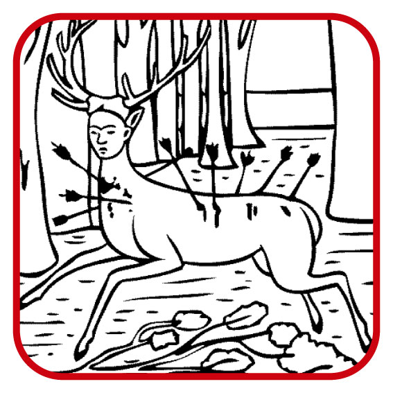
Sesta attività: crea la tua calaveras.
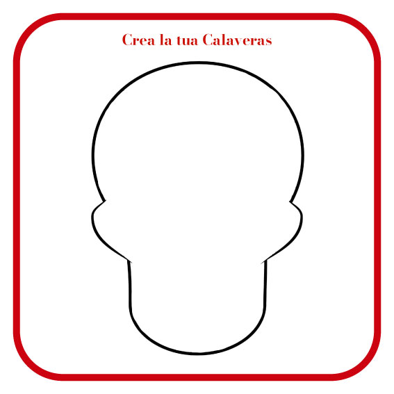
Scopri la storia di Frida!